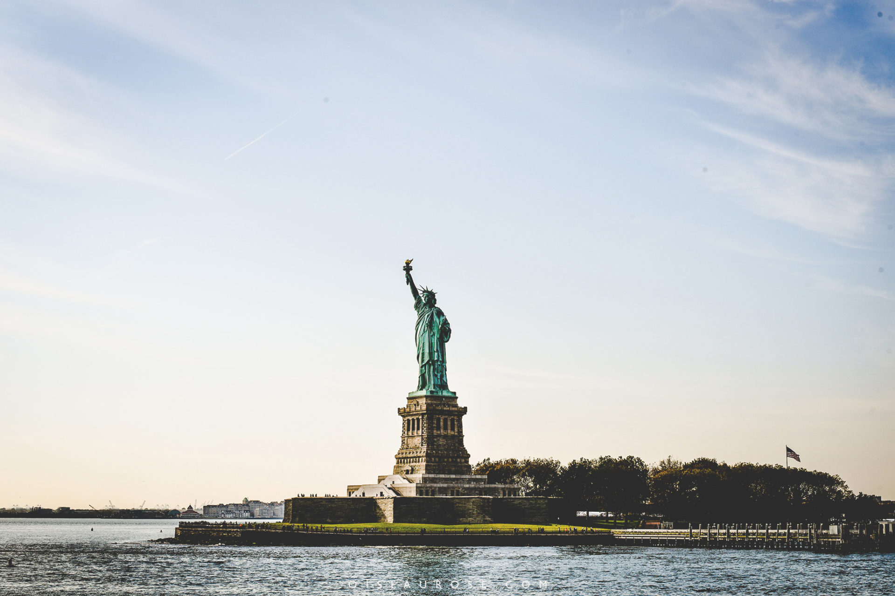
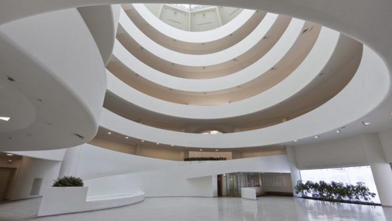
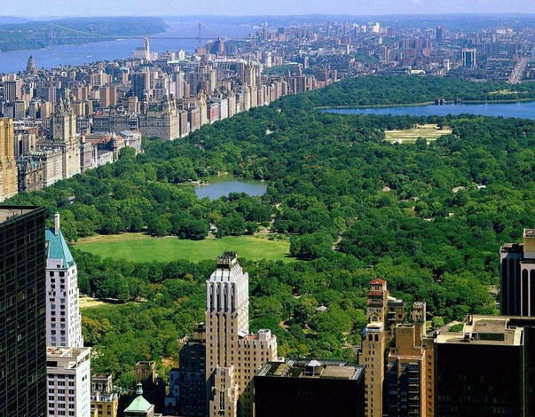
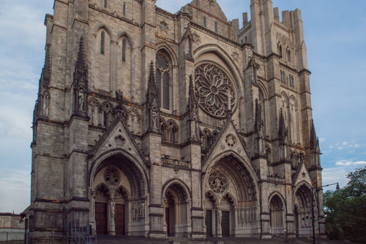
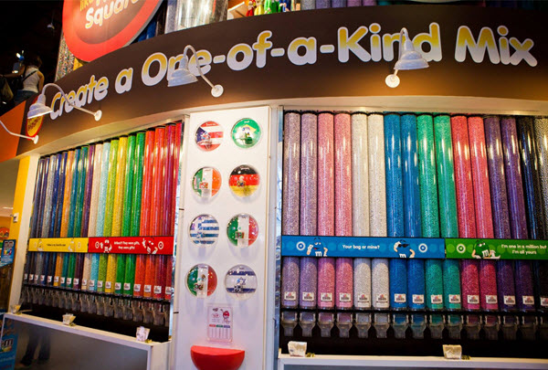
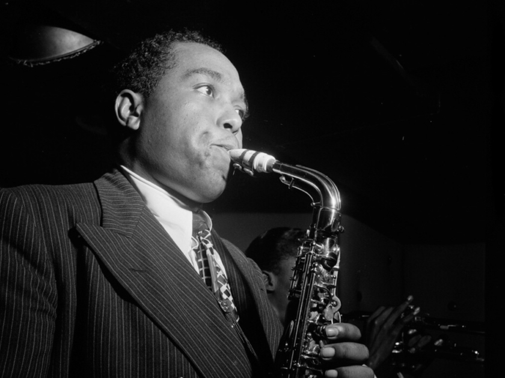

Nombreux sont ceux qui rêvent de voyager à travers le monde et découvrir de différentes cultures. Si vous aimez voyager, pourquoi ne pas penser à visiter New York. Vivre votre rêve américain dans la ville emblématique de New York est de rigueur. De cette manière, vous serez en mesure de voir par vous-même les buildings qui font le charme et la particularité de la ville. L’authenticité de la nourriture est également un plus, sans oublier que New York est une ville qui déborde événements sportifs internationaux.
New-York est une ville très cosmopolite. Un tiers de ses habitants est effectivement né à l’étranger, et on en profite ! Il suffit de se rendre dans les différents quartiers de la ville pour changer de continent. Vous pourrez déguster un repas asiatique à Chinatown et prendre un café italien à Little Italy 500m plus loin !

La Statue de la Liberté symbolise essentiellement l'espoir, l'immigration et la liberté. À ses pieds, des chaînes brisées symbolisent d'ailleurs l'abolition de l'esclavage et les 7 branches de sa couronne représentent les 7 mers et continents de la planète.
Comment évoquer New-York sans parler de ses buildings ? Le Chrysler Building et l’Empire State Building sont des incontournables ! De plus, certains buildings vous offriront une vue imprenable.
Il y a beaucoup de musées et d’expositions spécialisés dans l’Art contemporain à New-York. On peut citer pa exemple le MOMA (Museum of Modern Art) ou le Guggenheim.
Bien sûr on retrouve à New-York toute la cuisine du monde, les meilleurs coins pour bruncher et les meilleurs burgers, mais aussi des spécialités propres à la ville. Le Cronut est une pâtisserie réalisée par un français qui a voulu créer un mélange entre le croissant français et le donuts américain. Une gourmandise surprenante !
Les parcs et jardins de New-York sont surprenants. Plus besoin de présenter le Central Park à Manhattan, le plus connu et le plus spacieux d’entre eux. Ce grand parc abrite un zoo et offre de jolies balades au vert…
Même si la ville est jeune comparée à notre continent européen, son histoire n’en est pas moins inintéressante. Entre les divers flux de migration, les monuments religieux (la surprenante cathédrale St John the Divine !) et la construction des gratte-ciels, il y a beaucoup de choses à apprendre !
Envie de découvrir le plus grand magasin Toy’s R Us du monde ? Faire le plein de MMS dans la boutique de la marque ? Ou bien créer votre propre poupée dans un magasin de poupées ? Tout cela est possible à New-York !
New-York est le berceau du Jazz, du Rap et du Hip-Hop. Vous pourrez par exemple vous rendre à l’Apollo Theater pour écouter de nouveaux artistes, visiter le musée du Jazz pour les amateurs ou assister à un concert de Gospel.
